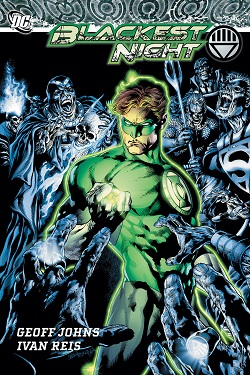
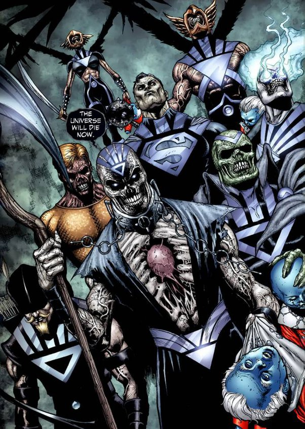

What is your guys favorite comic book series?
My personal favorite comic line has gotta be "The Blackest Night" by Geoff Johns. I always found the different types of power rings very interesting and these comics expand on those powers a lot. I also really enjoyed the main villain of the series Nekron.
Nekron
Geoff Johns was able to bring back major characters who died in previous comics through Nekron summoning the dead and white lanterns saving their souls. In my opinion this was done brilliantly and places "The Blackest Night" as my favorite comic series of all time. But now I'm curious, what are your favorite comic series and why?